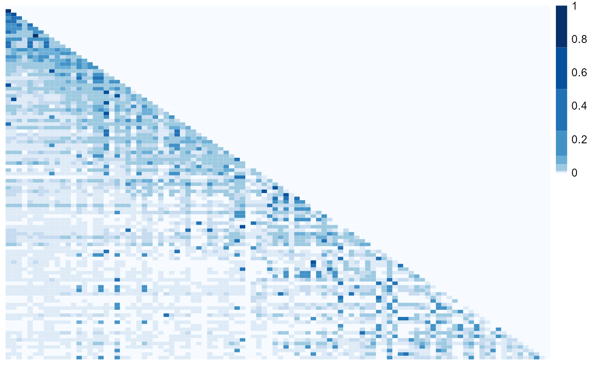

R/visualizeResults.R
nbHeatmap.RdThe function nbHeatmap plots a heatmap of the transmission probabilities.
The rows are the possible infectors and the columns are the possible infectees both
ordered by <dateVar>. The darker the square the higher the probability that
the pair represented by that square is a transmission link. If a cluster method is specified
using clustMethod and cutoff, then stars will be drawn in the squares of the
infectors in the top cluster.
The name of the dateset with transmission probabilities (column pVar),
individual IDs (columns <indIDVar>.1 and <indIDVar>.2), and the dates of
observation (columns <dateVar>.1 and <dateVar>.2).
The name (in quotes) of the individual ID columns
(data frame df must have variables called <indIDVar>.1
and <indIDVar>.2).
The name (in quotes) of the columns with the dates that the individuals are
observed (data frame df must have variables called <dateVar>.1 and
<dateVar>.2).
The name (in quotes) of the column with transmission probabilities.
The method used to cluster the infectors; one of
"none", "n", "kd", "hc_absolute", "hc_relative" where "none" or
not specifying a value means use all pairs with no clustering
(see clusterInfectors for detials on clustering methods).
The cutoff for clustering (see clusterInfectors).
A logical. If TRUE, then the squares are colored in greyscale,
if FALSE, then the squares are colored with shades of blue.
A numeric vector containing between 3 and 10 elements specifying the boundaries used to classify the probabilities and color the squares. The first element should be less than 0 and the last should be 1.
Users have the option of specifying how the probabilities should be grouped into different
color shades through the argument probBreaks. The probabilities are split into groups by
using probBreaks as the breaks argument in cut with the default options.
The length of the vector should be between 3 and 10 and the first element should be less than 0 and
the last 1 so that all probabilities are guarenteed to be classified.
The colors are defined with the code brewer.pal(length(probBreaks) - 1, "Blues")
(where "Blues" is replaced by "Greys" if blackAndWhite is set to TRUE).
NOTE: This plot will take long to run and may not look good with larger outbreaks (>200 individuals)
# \donttest{
## Heatmap with no clustering in color with the default probability breaks
par(mar = c(0, 0, 1, 0))
nbHeatmap(nbResults, indIDVar = "individualID", dateVar = "infectionDate",
pVar = "pScaled", clustMethod = "none")

dev.off()
#> null device
#> 1
## Adding stars for the top cluster, in black and white, changing the probability breaks
par(mar = c(0, 0, 1, 0))
nbHeatmap(nbResults, indIDVar = "individualID", dateVar = "infectionDate",
pVar = "pScaled", clustMethod = "hc_absolute", cutoff = 0.05,
blackAndWhite = TRUE, probBreaks = c(-0.01, 0.01, 0.1, 0.25, 0.5, 1))
dev.off()
#> null device
#> 1
# }